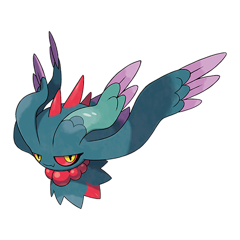
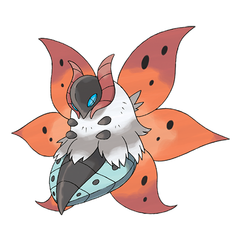

This is the most structured category of Smogon formats. Pokémon are ranked by statistics based on usage competitively, then placed into their individual tiers. The tiers include: OU (OverUsed), UU (UnderUsed), RU (Rarely Used), NU (Never Used), PU, and Ubers.
However, certain Pokémon are banned if they are considered to be too strong for their environment. Examples of this could be:
- Flutter Mane in OU due to its extreme speed and special attack.
- Volcarona for its typing and Quiver Dance move.

